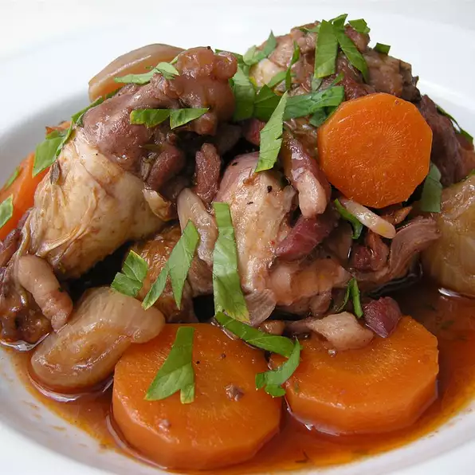

Quick Coq au Vin

Description
Chicken parts lightly seasoned and browned,
then braised in a red wine sauce.
A quick version of a French classic. Serve with pasta or white steamed rice, if desired.!
Ingredients
- 1 (3 to 3 1/2 pound) whole chicken
- 12 pearl onions
- ½ cup water
- 2 tablespoons olive oil, divided
- ½ teaspoon white sugar
- 4 large mushrooms, cleaned and quartered
- ⅓ cup finely chopped onion
- 3 cloves garlic, minced
- 1 ½ cups dry and robust red wine (such as Syrah or Grenache)
- 2 bay leaves
- 1 sprig thyme, leaves picked
- ¾ teaspoon salt
- ¾ teaspoon freshly ground black pepper
- 2 tablespoons red wine
- 1 teaspoon potato starch
- 4 slices bread, crusts removed
- 2 teaspoons canola oil
- 2 tablespoons finely chopped fresh parsle
Steps
-
Cut wings from the chicken, cutting at the joints into 3 pieces.
Cut the remaining chicken into 4 pieces, 2 breasts and 2 legs.
Remove skin and bones from the breasts.
Set breasts aside with the 4 meatier wing pieces.
-
Pull of skin from the chicken legs and remove tips from the drumsticks.
Cut down each side of the thigh bone and slide your knife under the
bone to separate meat from it. Holding the thigh bone,
cut all around the joint at the knee and pull out the bones.
Add the legs to the breasts and wings.
-
Combine pearl onions, water, 1 tablespoon olive oil, and sugar in a large saucepan;
bring to a boil and cook until water is evaporated and onions begin to fry,
2 to 4 minutes. Continue cooking and stirring, shaking the pan occasionally,
until onions are lightly browned and glazed on all sides, 5 to 7 minutes.
Add mushrooms; cook and stir for 1 minute. Remove from heat and cover.
-
Heat remaining 1 tablespoon olive oil in a large skillet over medium-high heat;
add chicken wings and cook, stirring frequently, until lightly browned on all sides,
2 to 3 minutes. Add the legs; cook and stir until browned, 2 to 3 minutes per side.
Add breasts; cook and stir until browned, 2 minutes per side.
Transfer chicken pieces to a plate.
-
Preheat oven to 400 degrees F (200 degrees C).
-
Place onion in the same skillet used for the chicken;
cook and stir for 1 minute. Add garlic; cook until fragrant, about 10 seconds.
Add 1 1/2 cups red wine, bay leaves, thyme, salt, and pepper;
bring to a boil.
Return legs and wings to the skillet; cover and simmer gently for 5 minutes.
Add chicken breasts and simmer gently until chicken is no longer pink in the center,
about 6 minutes.
-
Stir 2 tablespoons red wine and potato starch together in a bowl until dissolved;
stir into chicken mixture until sauce is thickened, 2 to 3 minutes.
Add pearl onions and mushrooms with their juices; keep warm.
-
Cut each slice of bread diagonally in half to form 2 triangles.
Trim each triangle into a heart shape.
Spread canola oil onto a baking sheet and press bread hearts into
the oil so they are moistened on both sides.
-
Bake in the preheated oven until croutons are browned, 8 to 10 minutes.
-
Dip the tip of each crouton into the sauce; press into parsley until coated.
-
Cut chicken breasts and legs in half.
Serve 1 breast piece, 1 drumstick or thigh, and 1 wing per person with 2
croutons and spoonfuls of sauce and vegetables.
Sprinkle remaining parsley over chicken.
Back to top